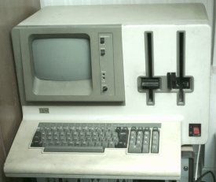
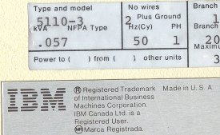

L'ordinateur IBM 5120, apparu avant l'IBM PC, est un "petit" système qui peut tenir sur une table. Il intègre dans un seul et imposant boitier le clavier, l'écran et deux lecteurs de disquettes, pouvant chacun stocker 1,2 Mo de données sur une disquette 8 pouces. Il appartenait à la famille 5110, comme en atteste la plaque du constructeur à l'arrière de la machine .
Il se destinait principalement à la gestion et la comptabilité et a été mis au point pour pouvoir être installer et utiliser par des non informaticiens. On pouvait le commander avec soit le langage Basic, soit L'APL, soit les deux en rom. IBM pouvait fournir avec un ensemble d'applications de gestion et de compta.
L'IBM 5120 se présente donc sous la forme d'un imposant boitier de 58 cm de large sur 40 cm de haut. Il est profond de 53 cm. Son poid de 48 Kg se trouve concentré sur le coté droit de la machine, ou se trouve les lecteurs de disquettes, ce qui le rend particulièrement difficile à déplacer.
Il ne possède pas de microprocesseur, mais un processeur central (le PALM) composé d'un ensemble de circuits intégrés assemblés sur un cirduit imprimé. Pour l'anecdote, le PALM était désigné par IBM comme étant un microprocesseur, non pas parce qu'il intégrait toute la logique sur une seule puce de silicium, mais parce qu'un partie de ses instructions était implémentée en microcode contenue en ROM. Pour continuer dans les désignations étranges, les ROM (Read Only Memory) sont appelées ROS (Read Only Storage) dans la documentation IBM de l'époque.
Le 5120 pouvait posséder 16, 32, 48 ou 64Ko de RAM. Quand il est équipé du Basic et de l'APL en même temps en ROM, le passage d'un langage à l'autre s'effectue en basculant un commutateur sur le panneau avant. L'écran de 9 pouces peut afficher 16 lignes de 64 caractères. La logique se trouve sur un ensemble de carte enfermée dans une cage. Celle ci contient les cartes RAM (recto verso), le processeur et les cartes annexes (langages, affichages, communication) (recto verso).
Je ne possède que l'unité centrale avec le Basic en rom (pas d'APL). Je possède également de la documentation et deux disquettes 8 pouces.
En 1975, IBM sort le premier ordinateur transportable (comprendre que l'on peut transporter par un homme en une fois et sans l'aide d'un camion): l'IBM 5100. Le 5100 se compose du fameux processeur PALM. Il comporte un lecteur de cartouches intégré contenant 204 Ko par cartouche, un écran de 5 pouces capable d'afficher 16 lignes de 64 caractères, de 16 à 64 Ko de ram et propose les langages Basic et APL. On peut remarquer que par rapport à lui, le 5120 ne propose pas grande chose de plus.
Le 5100 était vendu aux scientifiques et aux ingénieurs. IBM proposait avec des biliothèque de programmation pour les mathématiques et les statistiques.
En 1978 arrive l'IBM 5110, en deux modèles:
Par rapport à l'IBM 5100, orienté calculs scientifiques et statistiques, l'IBM 5110 était destiné aux gestionnaires. IBM fournissait avec une importante logithèque pour la comptabilité et la gestion d'entreprise en générale.
En 1980 débarque le 5110 model 3, qui était vendu complet avec une imprimante sous la dénomination IBM 5120. Celui ci reprend toute la logique interne du 5110, et intègre un écran plus grand et deux lecteurs de disquettes 8 pouces.
En 1981, sortent le System 23/Datamaster, qui reprend les forme du 5120 mais utilise un 8085 à la place du PALM, et surtout le 5150, le fameux IBM PC. En mars de l'année 1982, les gammes 5100 et 5110 sont abandonnées.
Dans la documentation se trouvait des manuels pour des applications métiers et la documentation livrée avec l'ordinateur. J'ai commencé à scanner cette dernière (notez que certains documents concernent aussi bien le 5120 que le 5110):
{kind=link}
{kind=link}
{kind=link}
{kind=link}
{kind=link}
{kind=link}
{kind=link}
{kind=link}
{kind=link}
{kind=link}